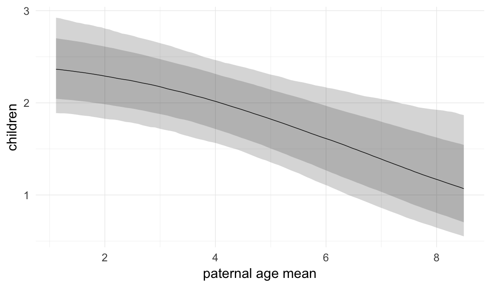
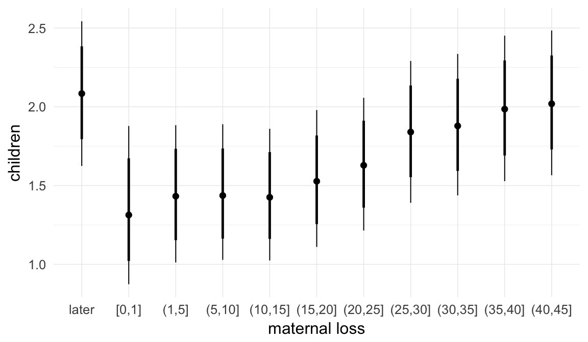
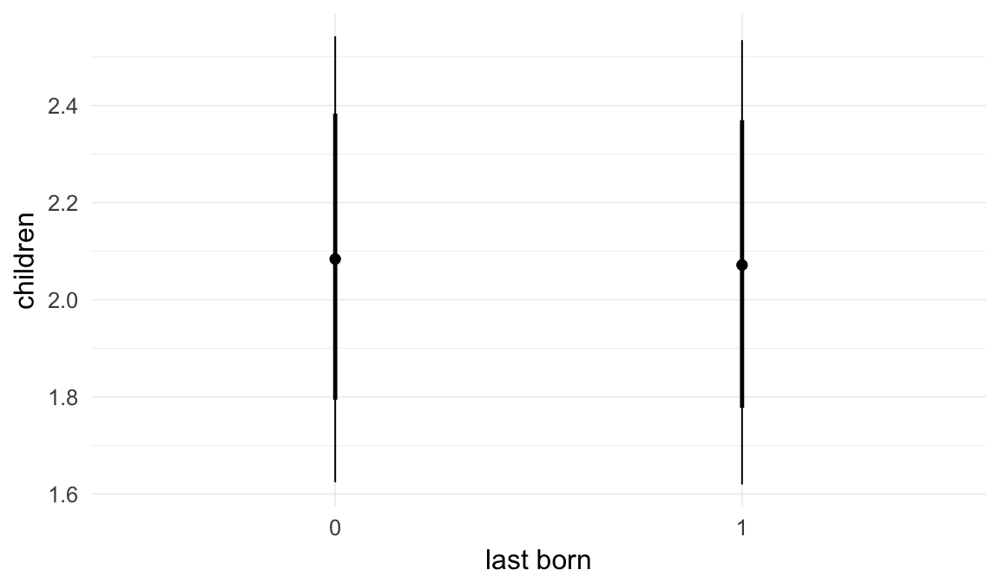
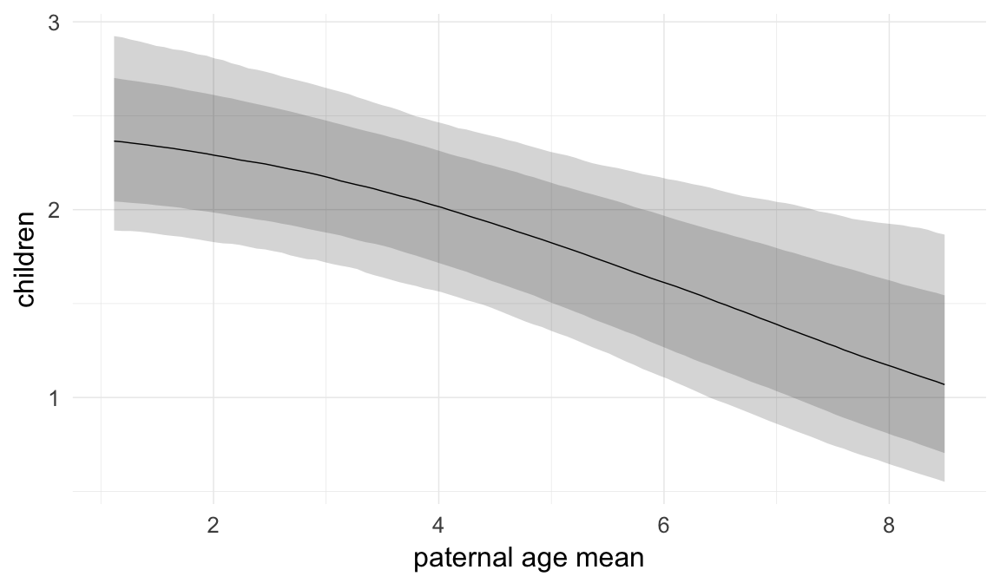
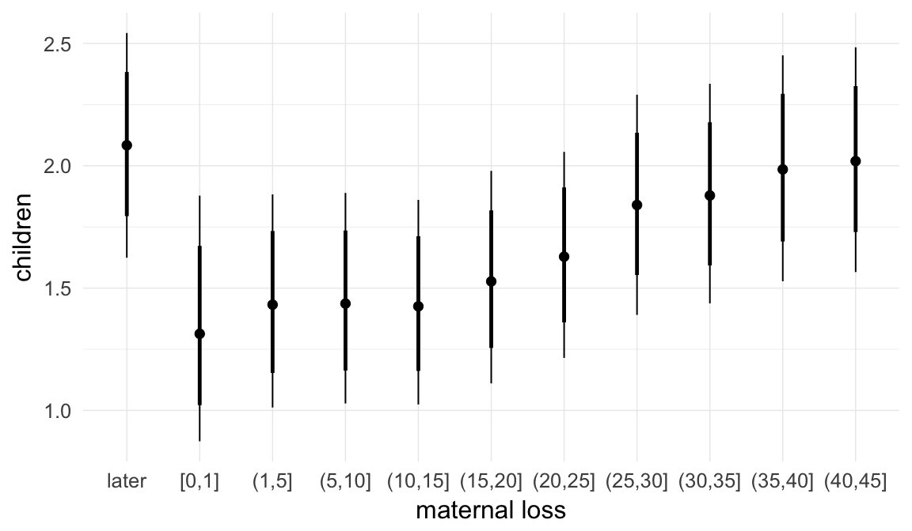
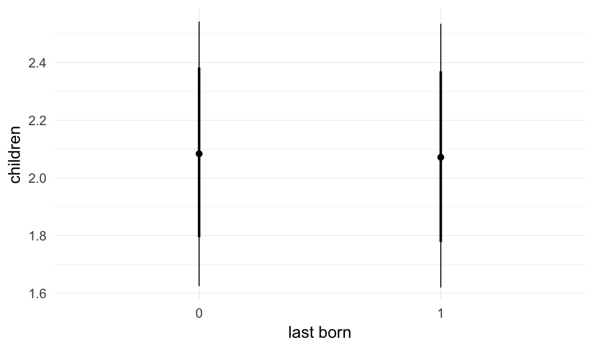
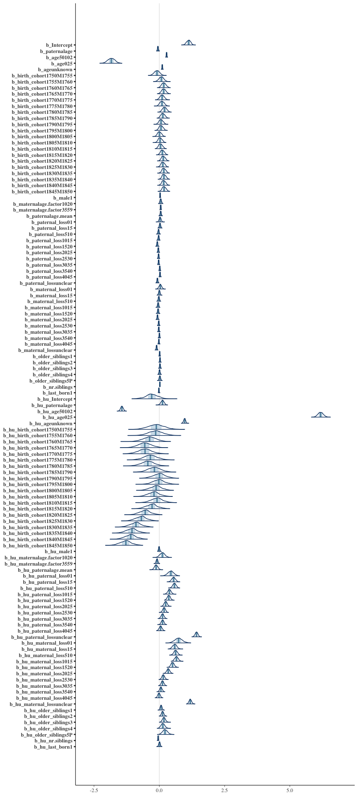
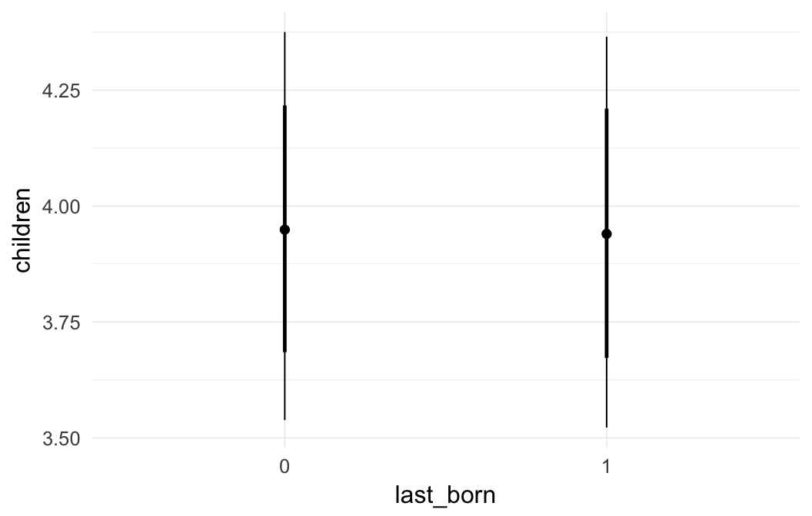
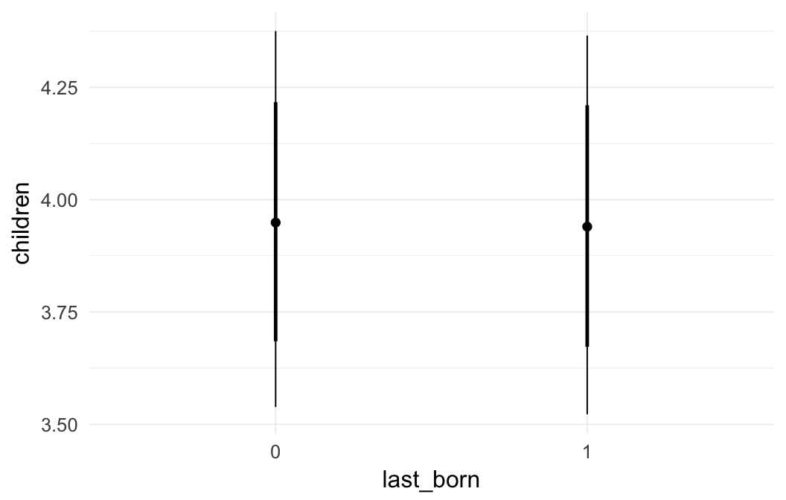

Historical Sweden sensitivity analyses
Loading details
source("0__helpers.R")
opts_chunk$set(warning=TRUE, cache=F,cache.lazy=F,tidy=FALSE,autodep=TRUE,dev=c('png','pdf'),fig.width=20,fig.height=12.5,out.width='1440px',out.height='900px')
make_path = function(file) {
get_coefficient_path(file, "ddb")
}
# options for each chunk calling knit_child
opts_chunk$set(warning=FALSE, message = FALSE, echo = FALSE)Analysis description
Data subset
The ddb.1 dataset contains only those participants where paternal age is known and the birthdate is between 1760 and 1880.
Model description
All of the following models are the same as our main model m3, except for the noted changes to test robustness.
s1: Mediation via age
Here, we tested whether the effect on reproductive success is mediated by age (mortality). We entered an unknown age for people who did not have a death date on their records and most likely outlived the observation period of the church records.
Model summary
Full summary
model_summary = summary(model, use_cache = FALSE, priors = TRUE)
print(model_summary)## Family: hurdle_poisson (log)
## Formula: children ~ paternalage + age + birth_cohort + male + maternalage.factor + paternalage.mean + paternal_loss + maternal_loss + older_siblings + nr.siblings + last_born + (1 | idParents)
## hu ~ paternalage + age + birth_cohort + male + maternalage.factor + paternalage.mean + paternal_loss + maternal_loss + older_siblings + nr.siblings + last_born + (1 | idParents)
## Data: model_data (Number of observations: 84105)
## Samples: 6 chains, each with iter = 1000; warmup = 500; thin = 1;
## total post-warmup samples = 3000
## WAIC: Not computed
##
## Priors:
## b ~ normal(0,5)
## sd ~ student_t(3, 0, 5)
## b_hu ~ normal(0,5)
## sd_hu ~ student_t(3, 0, 10)
##
## Group-Level Effects:
## ~idParents (Number of levels: 24407)
## Estimate Est.Error l-95% CI u-95% CI Eff.Sample Rhat
## sd(Intercept) 0.36 0.01 0.35 0.37 1207 1
## sd(hu_Intercept) 1.09 0.02 1.05 1.13 1089 1
##
## Population-Level Effects:
## Estimate Est.Error l-95% CI u-95% CI Eff.Sample
## Intercept 1.12 0.08 0.97 1.26 189
## paternalage -0.05 0.02 -0.09 -0.02 763
## age50102 0.28 0.01 0.26 0.30 2488
## age025 -1.84 0.13 -2.10 -1.58 2277
## ageunknown 0.11 0.01 0.09 0.13 3000
## birth_cohort1750M1755 -0.09 0.10 -0.29 0.11 451
## birth_cohort1755M1760 0.08 0.09 -0.09 0.26 271
## birth_cohort1760M1765 0.17 0.08 0.02 0.33 211
## birth_cohort1765M1770 0.17 0.08 0.01 0.33 190
## birth_cohort1770M1775 0.11 0.08 -0.05 0.27 197
## birth_cohort1775M1780 0.11 0.08 -0.04 0.27 191
## birth_cohort1780M1785 0.20 0.08 0.05 0.36 179
## birth_cohort1785M1790 0.14 0.08 -0.01 0.29 183
## birth_cohort1790M1795 0.07 0.08 -0.07 0.22 170
## birth_cohort1795M1800 0.07 0.07 -0.07 0.21 169
## birth_cohort1800M1805 0.01 0.07 -0.13 0.15 163
## birth_cohort1805M1810 0.03 0.07 -0.10 0.18 163
## birth_cohort1810M1815 0.05 0.07 -0.08 0.19 157
## birth_cohort1815M1820 0.12 0.07 -0.01 0.26 159
## birth_cohort1820M1825 0.15 0.07 0.02 0.29 156
## birth_cohort1825M1830 0.14 0.07 0.01 0.28 158
## birth_cohort1830M1835 0.18 0.07 0.04 0.31 159
## birth_cohort1835M1840 0.18 0.07 0.05 0.32 160
## birth_cohort1840M1845 0.17 0.07 0.04 0.31 159
## birth_cohort1845M1850 0.19 0.07 0.05 0.33 163
## male1 0.03 0.01 0.02 0.04 3000
## maternalage.factor1020 0.05 0.03 0.00 0.11 3000
## maternalage.factor3559 0.06 0.01 0.04 0.07 3000
## paternalage.mean 0.06 0.02 0.02 0.09 743
## paternal_loss01 0.03 0.04 -0.04 0.10 1794
## paternal_loss15 0.03 0.02 -0.02 0.07 1320
## paternal_loss510 -0.03 0.02 -0.07 0.01 1358
## paternal_loss1015 -0.03 0.02 -0.06 0.01 1329
## paternal_loss1520 -0.08 0.02 -0.11 -0.04 1161
## paternal_loss2025 -0.04 0.02 -0.07 -0.01 1077
## paternal_loss2530 -0.03 0.01 -0.06 0.00 1156
## paternal_loss3035 -0.03 0.01 -0.05 0.00 1236
## paternal_loss3540 0.02 0.01 -0.01 0.04 1326
## paternal_loss4045 0.03 0.01 0.00 0.05 1673
## paternal_lossunclear -0.07 0.02 -0.11 -0.04 1109
## maternal_loss01 0.04 0.05 -0.06 0.14 2461
## maternal_loss15 0.00 0.03 -0.05 0.06 2088
## maternal_loss510 -0.02 0.02 -0.06 0.03 1817
## maternal_loss1015 -0.05 0.02 -0.09 0.00 1677
## maternal_loss1520 -0.05 0.02 -0.08 -0.01 1488
## maternal_loss2025 -0.07 0.02 -0.10 -0.04 1395
## maternal_loss2530 -0.02 0.02 -0.05 0.01 1238
## maternal_loss3035 -0.02 0.01 -0.05 0.01 1442
## maternal_loss3540 0.00 0.01 -0.02 0.03 1474
## maternal_loss4045 -0.02 0.01 -0.04 0.01 3000
## maternal_lossunclear -0.10 0.02 -0.13 -0.07 1124
## older_siblings1 0.01 0.01 -0.01 0.03 1507
## older_siblings2 0.03 0.01 0.00 0.05 942
## older_siblings3 0.03 0.02 0.00 0.06 841
## older_siblings4 0.01 0.02 -0.03 0.05 842
## older_siblings5P 0.02 0.03 -0.03 0.07 815
## nr.siblings 0.02 0.00 0.02 0.03 869
## last_born1 -0.02 0.01 -0.03 0.00 3000
## hu_Intercept -0.29 0.23 -0.78 0.16 159
## hu_paternalage 0.12 0.06 0.00 0.24 691
## hu_age50102 -1.43 0.05 -1.53 -1.34 3000
## hu_age025 6.18 0.10 5.98 6.38 3000
## hu_ageunknown 0.97 0.04 0.90 1.04 2528
## hu_birth_cohort1750M1755 -0.12 0.31 -0.73 0.49 320
## hu_birth_cohort1755M1760 -0.14 0.27 -0.69 0.40 236
## hu_birth_cohort1760M1765 -0.37 0.26 -0.89 0.14 169
## hu_birth_cohort1765M1770 -0.55 0.25 -1.04 -0.05 160
## hu_birth_cohort1770M1775 -0.55 0.26 -1.08 0.00 161
## hu_birth_cohort1775M1780 -0.34 0.26 -0.85 0.17 173
## hu_birth_cohort1780M1785 -0.44 0.25 -0.95 0.07 152
## hu_birth_cohort1785M1790 -0.19 0.24 -0.66 0.32 162
## hu_birth_cohort1790M1795 0.00 0.23 -0.46 0.45 135
## hu_birth_cohort1795M1800 -0.02 0.22 -0.47 0.42 129
## hu_birth_cohort1800M1805 -0.13 0.22 -0.58 0.32 126
## hu_birth_cohort1805M1810 -0.21 0.22 -0.64 0.23 122
## hu_birth_cohort1810M1815 -0.09 0.22 -0.53 0.35 124
## hu_birth_cohort1815M1820 -0.29 0.22 -0.72 0.15 122
## hu_birth_cohort1820M1825 -0.54 0.21 -0.97 -0.11 119
## hu_birth_cohort1825M1830 -0.70 0.21 -1.11 -0.26 118
## hu_birth_cohort1830M1835 -0.90 0.22 -1.33 -0.46 122
## hu_birth_cohort1835M1840 -1.05 0.22 -1.48 -0.62 119
## hu_birth_cohort1840M1845 -1.10 0.22 -1.53 -0.68 120
## hu_birth_cohort1845M1850 -1.29 0.22 -1.71 -0.85 120
## hu_male1 -0.01 0.02 -0.05 0.03 3000
## hu_maternalage.factor1020 0.12 0.10 -0.07 0.32 3000
## hu_maternalage.factor3559 -0.09 0.03 -0.15 -0.02 2462
## hu_paternalage.mean -0.12 0.06 -0.24 0.01 737
## hu_paternal_loss01 0.44 0.11 0.23 0.66 3000
## hu_paternal_loss15 0.55 0.07 0.41 0.69 1405
## hu_paternal_loss510 0.58 0.06 0.45 0.71 1183
## hu_paternal_loss1015 0.39 0.06 0.26 0.51 1289
## hu_paternal_loss1520 0.36 0.06 0.25 0.48 1086
## hu_paternal_loss2025 0.24 0.06 0.14 0.35 1061
## hu_paternal_loss2530 0.18 0.05 0.08 0.28 1000
## hu_paternal_loss3035 0.12 0.05 0.02 0.22 1148
## hu_paternal_loss3540 0.13 0.05 0.03 0.22 1216
## hu_paternal_loss4045 0.05 0.05 -0.05 0.15 3000
## hu_paternal_lossunclear 1.43 0.05 1.32 1.52 985
## hu_maternal_loss01 0.74 0.14 0.46 1.03 3000
## hu_maternal_loss15 0.59 0.08 0.43 0.75 3000
## hu_maternal_loss510 0.63 0.07 0.48 0.76 3000
## hu_maternal_loss1015 0.66 0.07 0.53 0.79 3000
## hu_maternal_loss1520 0.51 0.06 0.39 0.64 3000
## hu_maternal_loss2025 0.34 0.06 0.23 0.46 1744
## hu_maternal_loss2530 0.15 0.05 0.05 0.25 1739
## hu_maternal_loss3035 0.12 0.05 0.03 0.22 2010
## hu_maternal_loss3540 0.06 0.05 -0.02 0.15 3000
## hu_maternal_loss4045 -0.01 0.05 -0.10 0.08 3000
## hu_maternal_lossunclear 1.19 0.05 1.10 1.28 1171
## hu_older_siblings1 0.07 0.03 0.00 0.14 1557
## hu_older_siblings2 0.13 0.04 0.04 0.22 951
## hu_older_siblings3 0.18 0.06 0.07 0.30 847
## hu_older_siblings4 0.14 0.07 0.00 0.28 771
## hu_older_siblings5P 0.22 0.09 0.04 0.41 746
## hu_nr.siblings -0.04 0.01 -0.06 -0.03 821
## hu_last_born1 0.01 0.03 -0.05 0.06 3000
## Rhat
## Intercept 1.02
## paternalage 1.00
## age50102 1.00
## age025 1.00
## ageunknown 1.00
## birth_cohort1750M1755 1.01
## birth_cohort1755M1760 1.01
## birth_cohort1760M1765 1.01
## birth_cohort1765M1770 1.01
## birth_cohort1770M1775 1.02
## birth_cohort1775M1780 1.02
## birth_cohort1780M1785 1.02
## birth_cohort1785M1790 1.02
## birth_cohort1790M1795 1.02
## birth_cohort1795M1800 1.02
## birth_cohort1800M1805 1.02
## birth_cohort1805M1810 1.02
## birth_cohort1810M1815 1.02
## birth_cohort1815M1820 1.02
## birth_cohort1820M1825 1.02
## birth_cohort1825M1830 1.02
## birth_cohort1830M1835 1.02
## birth_cohort1835M1840 1.02
## birth_cohort1840M1845 1.02
## birth_cohort1845M1850 1.02
## male1 1.00
## maternalage.factor1020 1.00
## maternalage.factor3559 1.00
## paternalage.mean 1.01
## paternal_loss01 1.00
## paternal_loss15 1.00
## paternal_loss510 1.00
## paternal_loss1015 1.00
## paternal_loss1520 1.00
## paternal_loss2025 1.00
## paternal_loss2530 1.00
## paternal_loss3035 1.00
## paternal_loss3540 1.00
## paternal_loss4045 1.00
## paternal_lossunclear 1.00
## maternal_loss01 1.00
## maternal_loss15 1.00
## maternal_loss510 1.00
## maternal_loss1015 1.00
## maternal_loss1520 1.00
## maternal_loss2025 1.00
## maternal_loss2530 1.00
## maternal_loss3035 1.00
## maternal_loss3540 1.00
## maternal_loss4045 1.00
## maternal_lossunclear 1.00
## older_siblings1 1.00
## older_siblings2 1.00
## older_siblings3 1.00
## older_siblings4 1.00
## older_siblings5P 1.00
## nr.siblings 1.00
## last_born1 1.00
## hu_Intercept 1.05
## hu_paternalage 1.00
## hu_age50102 1.00
## hu_age025 1.00
## hu_ageunknown 1.00
## hu_birth_cohort1750M1755 1.03
## hu_birth_cohort1755M1760 1.03
## hu_birth_cohort1760M1765 1.04
## hu_birth_cohort1765M1770 1.04
## hu_birth_cohort1770M1775 1.04
## hu_birth_cohort1775M1780 1.04
## hu_birth_cohort1780M1785 1.05
## hu_birth_cohort1785M1790 1.04
## hu_birth_cohort1790M1795 1.05
## hu_birth_cohort1795M1800 1.05
## hu_birth_cohort1800M1805 1.05
## hu_birth_cohort1805M1810 1.06
## hu_birth_cohort1810M1815 1.05
## hu_birth_cohort1815M1820 1.06
## hu_birth_cohort1820M1825 1.06
## hu_birth_cohort1825M1830 1.06
## hu_birth_cohort1830M1835 1.06
## hu_birth_cohort1835M1840 1.06
## hu_birth_cohort1840M1845 1.06
## hu_birth_cohort1845M1850 1.06
## hu_male1 1.00
## hu_maternalage.factor1020 1.00
## hu_maternalage.factor3559 1.00
## hu_paternalage.mean 1.00
## hu_paternal_loss01 1.00
## hu_paternal_loss15 1.00
## hu_paternal_loss510 1.01
## hu_paternal_loss1015 1.00
## hu_paternal_loss1520 1.00
## hu_paternal_loss2025 1.01
## hu_paternal_loss2530 1.01
## hu_paternal_loss3035 1.00
## hu_paternal_loss3540 1.01
## hu_paternal_loss4045 1.00
## hu_paternal_lossunclear 1.01
## hu_maternal_loss01 1.00
## hu_maternal_loss15 1.00
## hu_maternal_loss510 1.00
## hu_maternal_loss1015 1.00
## hu_maternal_loss1520 1.00
## hu_maternal_loss2025 1.00
## hu_maternal_loss2530 1.00
## hu_maternal_loss3035 1.00
## hu_maternal_loss3540 1.00
## hu_maternal_loss4045 1.00
## hu_maternal_lossunclear 1.00
## hu_older_siblings1 1.00
## hu_older_siblings2 1.00
## hu_older_siblings3 1.00
## hu_older_siblings4 1.00
## hu_older_siblings5P 1.00
## hu_nr.siblings 1.00
## hu_last_born1 1.00
##
## Samples were drawn using sampling(NUTS). For each parameter, Eff.Sample
## is a crude measure of effective sample size, and Rhat is the potential
## scale reduction factor on split chains (at convergence, Rhat = 1).Table of fixed effects
fixed_eff = data.frame(model_summary$fixed, check.names = F)
fixed_eff$Est.Error = fixed_eff$Eff.Sample = fixed_eff$Rhat = NULL
fixed_eff$OR = exp(fixed_eff$Estimate)
fixed_eff$OR_low = exp(fixed_eff$`l-95% CI`)
fixed_eff$OR_high = exp(fixed_eff$`u-95% CI`)
pander::pander(fixed_eff)| Â | Estimate | l-95% CI | u-95% CI | OR | OR_low | OR_high |
|---|---|---|---|---|---|---|
| Intercept | 1.122 | 0.9736 | 1.26 | 3.071 | 2.647 | 3.525 |
| paternalage | -0.05204 | -0.08729 | -0.01504 | 0.9493 | 0.9164 | 0.9851 |
| age50102 | 0.2795 | 0.2569 | 0.3008 | 1.322 | 1.293 | 1.351 |
| age025 | -1.838 | -2.104 | -1.579 | 0.1591 | 0.122 | 0.2061 |
| ageunknown | 0.1133 | 0.09253 | 0.1341 | 1.12 | 1.097 | 1.144 |
| birth_cohort1750M1755 | -0.09037 | -0.2933 | 0.1123 | 0.9136 | 0.7458 | 1.119 |
| birth_cohort1755M1760 | 0.07972 | -0.09393 | 0.2563 | 1.083 | 0.9103 | 1.292 |
| birth_cohort1760M1765 | 0.1722 | 0.01856 | 0.3317 | 1.188 | 1.019 | 1.393 |
| birth_cohort1765M1770 | 0.1683 | 0.01331 | 0.3287 | 1.183 | 1.013 | 1.389 |
| birth_cohort1770M1775 | 0.1089 | -0.04653 | 0.2701 | 1.115 | 0.9545 | 1.31 |
| birth_cohort1775M1780 | 0.1058 | -0.04344 | 0.2694 | 1.112 | 0.9575 | 1.309 |
| birth_cohort1780M1785 | 0.2026 | 0.0534 | 0.3599 | 1.225 | 1.055 | 1.433 |
| birth_cohort1785M1790 | 0.1367 | -0.005424 | 0.2851 | 1.146 | 0.9946 | 1.33 |
| birth_cohort1790M1795 | 0.06821 | -0.07383 | 0.2179 | 1.071 | 0.9288 | 1.243 |
| birth_cohort1795M1800 | 0.06815 | -0.06933 | 0.2112 | 1.071 | 0.933 | 1.235 |
| birth_cohort1800M1805 | 0.00846 | -0.1304 | 0.1542 | 1.008 | 0.8778 | 1.167 |
| birth_cohort1805M1810 | 0.03277 | -0.1009 | 0.1769 | 1.033 | 0.904 | 1.193 |
| birth_cohort1810M1815 | 0.04869 | -0.08349 | 0.1908 | 1.05 | 0.9199 | 1.21 |
| birth_cohort1815M1820 | 0.1202 | -0.01389 | 0.2635 | 1.128 | 0.9862 | 1.301 |
| birth_cohort1820M1825 | 0.1549 | 0.02342 | 0.2947 | 1.167 | 1.024 | 1.343 |
| birth_cohort1825M1830 | 0.1388 | 0.006745 | 0.2775 | 1.149 | 1.007 | 1.32 |
| birth_cohort1830M1835 | 0.1759 | 0.04265 | 0.3142 | 1.192 | 1.044 | 1.369 |
| birth_cohort1835M1840 | 0.18 | 0.04691 | 0.3208 | 1.197 | 1.048 | 1.378 |
| birth_cohort1840M1845 | 0.1714 | 0.03828 | 0.3143 | 1.187 | 1.039 | 1.369 |
| birth_cohort1845M1850 | 0.1855 | 0.05328 | 0.3278 | 1.204 | 1.055 | 1.388 |
| male1 | 0.03212 | 0.01992 | 0.04415 | 1.033 | 1.02 | 1.045 |
| maternalage.factor1020 | 0.05479 | 0.0004022 | 0.1105 | 1.056 | 1 | 1.117 |
| maternalage.factor3559 | 0.05542 | 0.036 | 0.07449 | 1.057 | 1.037 | 1.077 |
| paternalage.mean | 0.05519 | 0.01759 | 0.09104 | 1.057 | 1.018 | 1.095 |
| paternal_loss01 | 0.0318 | -0.03768 | 0.1033 | 1.032 | 0.963 | 1.109 |
| paternal_loss15 | 0.02669 | -0.02141 | 0.07339 | 1.027 | 0.9788 | 1.076 |
| paternal_loss510 | -0.02874 | -0.06879 | 0.01296 | 0.9717 | 0.9335 | 1.013 |
| paternal_loss1015 | -0.02611 | -0.06214 | 0.01016 | 0.9742 | 0.9397 | 1.01 |
| paternal_loss1520 | -0.07706 | -0.1119 | -0.04345 | 0.9258 | 0.8941 | 0.9575 |
| paternal_loss2025 | -0.03816 | -0.06829 | -0.007269 | 0.9626 | 0.934 | 0.9928 |
| paternal_loss2530 | -0.02786 | -0.05694 | 0.0009038 | 0.9725 | 0.9447 | 1.001 |
| paternal_loss3035 | -0.0255 | -0.05236 | 0.002686 | 0.9748 | 0.949 | 1.003 |
| paternal_loss3540 | 0.01863 | -0.006289 | 0.04443 | 1.019 | 0.9937 | 1.045 |
| paternal_loss4045 | 0.02792 | 0.002462 | 0.05258 | 1.028 | 1.002 | 1.054 |
| paternal_lossunclear | -0.07282 | -0.1071 | -0.03722 | 0.9298 | 0.8984 | 0.9635 |
| maternal_loss01 | 0.03913 | -0.0607 | 0.1398 | 1.04 | 0.9411 | 1.15 |
| maternal_loss15 | 0.002545 | -0.05096 | 0.05607 | 1.003 | 0.9503 | 1.058 |
| maternal_loss510 | -0.01768 | -0.06261 | 0.02614 | 0.9825 | 0.9393 | 1.026 |
| maternal_loss1015 | -0.04525 | -0.08646 | -0.002536 | 0.9558 | 0.9172 | 0.9975 |
| maternal_loss1520 | -0.04745 | -0.08476 | -0.01168 | 0.9537 | 0.9187 | 0.9884 |
| maternal_loss2025 | -0.06843 | -0.1013 | -0.03554 | 0.9339 | 0.9037 | 0.9651 |
| maternal_loss2530 | -0.02081 | -0.05133 | 0.00931 | 0.9794 | 0.95 | 1.009 |
| maternal_loss3035 | -0.01947 | -0.04654 | 0.008182 | 0.9807 | 0.9545 | 1.008 |
| maternal_loss3540 | 0.004081 | -0.01988 | 0.02833 | 1.004 | 0.9803 | 1.029 |
| maternal_loss4045 | -0.01606 | -0.04034 | 0.007709 | 0.9841 | 0.9605 | 1.008 |
| maternal_lossunclear | -0.1033 | -0.1347 | -0.07212 | 0.9018 | 0.8739 | 0.9304 |
| older_siblings1 | 0.01485 | -0.005338 | 0.03451 | 1.015 | 0.9947 | 1.035 |
| older_siblings2 | 0.0276 | 0.001599 | 0.05371 | 1.028 | 1.002 | 1.055 |
| older_siblings3 | 0.02691 | -0.004489 | 0.05952 | 1.027 | 0.9955 | 1.061 |
| older_siblings4 | 0.00982 | -0.03061 | 0.04957 | 1.01 | 0.9699 | 1.051 |
| older_siblings5P | 0.02184 | -0.02929 | 0.07444 | 1.022 | 0.9711 | 1.077 |
| nr.siblings | 0.02177 | 0.01707 | 0.02698 | 1.022 | 1.017 | 1.027 |
| last_born1 | -0.01521 | -0.03282 | 0.002561 | 0.9849 | 0.9677 | 1.003 |
| hu_Intercept | -0.2873 | -0.7773 | 0.1585 | 0.7503 | 0.4597 | 1.172 |
| hu_paternalage | 0.1223 | -0.0008385 | 0.238 | 1.13 | 0.9992 | 1.269 |
| hu_age50102 | -1.431 | -1.528 | -1.335 | 0.2391 | 0.217 | 0.2631 |
| hu_age025 | 6.177 | 5.981 | 6.381 | 481.8 | 395.7 | 590.2 |
| hu_ageunknown | 0.9701 | 0.8969 | 1.043 | 2.638 | 2.452 | 2.838 |
| hu_birth_cohort1750M1755 | -0.1185 | -0.7314 | 0.4902 | 0.8882 | 0.4812 | 1.633 |
| hu_birth_cohort1755M1760 | -0.143 | -0.6891 | 0.4049 | 0.8667 | 0.502 | 1.499 |
| hu_birth_cohort1760M1765 | -0.3715 | -0.8901 | 0.1372 | 0.6897 | 0.4106 | 1.147 |
| hu_birth_cohort1765M1770 | -0.5522 | -1.043 | -0.0475 | 0.5757 | 0.3524 | 0.9536 |
| hu_birth_cohort1770M1775 | -0.5469 | -1.083 | -0.004073 | 0.5788 | 0.3384 | 0.9959 |
| hu_birth_cohort1775M1780 | -0.3378 | -0.8496 | 0.1717 | 0.7133 | 0.4276 | 1.187 |
| hu_birth_cohort1780M1785 | -0.4399 | -0.9493 | 0.0654 | 0.6441 | 0.387 | 1.068 |
| hu_birth_cohort1785M1790 | -0.1862 | -0.6639 | 0.3157 | 0.8301 | 0.5149 | 1.371 |
| hu_birth_cohort1790M1795 | -0.001279 | -0.4631 | 0.4525 | 0.9987 | 0.6293 | 1.572 |
| hu_birth_cohort1795M1800 | -0.0223 | -0.4713 | 0.4211 | 0.9779 | 0.6242 | 1.524 |
| hu_birth_cohort1800M1805 | -0.128 | -0.5768 | 0.3211 | 0.8798 | 0.5617 | 1.379 |
| hu_birth_cohort1805M1810 | -0.2093 | -0.6422 | 0.2349 | 0.8111 | 0.5261 | 1.265 |
| hu_birth_cohort1810M1815 | -0.09267 | -0.5316 | 0.3481 | 0.9115 | 0.5877 | 1.416 |
| hu_birth_cohort1815M1820 | -0.2866 | -0.7173 | 0.1519 | 0.7508 | 0.4881 | 1.164 |
| hu_birth_cohort1820M1825 | -0.5449 | -0.9655 | -0.1077 | 0.5799 | 0.3808 | 0.8979 |
| hu_birth_cohort1825M1830 | -0.6956 | -1.113 | -0.2572 | 0.4988 | 0.3285 | 0.7732 |
| hu_birth_cohort1830M1835 | -0.8995 | -1.334 | -0.4587 | 0.4068 | 0.2635 | 0.6321 |
| hu_birth_cohort1835M1840 | -1.054 | -1.483 | -0.6164 | 0.3487 | 0.227 | 0.5399 |
| hu_birth_cohort1840M1845 | -1.098 | -1.531 | -0.6751 | 0.3335 | 0.2163 | 0.5091 |
| hu_birth_cohort1845M1850 | -1.286 | -1.706 | -0.8475 | 0.2764 | 0.1816 | 0.4285 |
| hu_male1 | -0.007811 | -0.05071 | 0.03492 | 0.9922 | 0.9506 | 1.036 |
| hu_maternalage.factor1020 | 0.1207 | -0.069 | 0.3181 | 1.128 | 0.9333 | 1.375 |
| hu_maternalage.factor3559 | -0.0872 | -0.1506 | -0.023 | 0.9165 | 0.8602 | 0.9773 |
| hu_paternalage.mean | -0.1203 | -0.2385 | 0.008312 | 0.8867 | 0.7878 | 1.008 |
| hu_paternal_loss01 | 0.4415 | 0.2278 | 0.6565 | 1.555 | 1.256 | 1.928 |
| hu_paternal_loss15 | 0.5486 | 0.4077 | 0.6889 | 1.731 | 1.503 | 1.992 |
| hu_paternal_loss510 | 0.5797 | 0.4508 | 0.7076 | 1.786 | 1.57 | 2.029 |
| hu_paternal_loss1015 | 0.3873 | 0.2627 | 0.5064 | 1.473 | 1.3 | 1.659 |
| hu_paternal_loss1520 | 0.3638 | 0.2486 | 0.4804 | 1.439 | 1.282 | 1.617 |
| hu_paternal_loss2025 | 0.2441 | 0.1381 | 0.3516 | 1.276 | 1.148 | 1.421 |
| hu_paternal_loss2530 | 0.1838 | 0.07662 | 0.2832 | 1.202 | 1.08 | 1.327 |
| hu_paternal_loss3035 | 0.1247 | 0.02146 | 0.2229 | 1.133 | 1.022 | 1.25 |
| hu_paternal_loss3540 | 0.1262 | 0.03206 | 0.219 | 1.135 | 1.033 | 1.245 |
| hu_paternal_loss4045 | 0.05037 | -0.05149 | 0.1527 | 1.052 | 0.9498 | 1.165 |
| hu_paternal_lossunclear | 1.425 | 1.322 | 1.523 | 4.158 | 3.75 | 4.586 |
| hu_maternal_loss01 | 0.7392 | 0.4645 | 1.034 | 2.094 | 1.591 | 2.813 |
| hu_maternal_loss15 | 0.5893 | 0.4319 | 0.7458 | 1.803 | 1.54 | 2.108 |
| hu_maternal_loss510 | 0.6256 | 0.4827 | 0.7628 | 1.869 | 1.62 | 2.144 |
| hu_maternal_loss1015 | 0.657 | 0.5322 | 0.7882 | 1.929 | 1.703 | 2.199 |
| hu_maternal_loss1520 | 0.5087 | 0.3932 | 0.6356 | 1.663 | 1.482 | 1.888 |
| hu_maternal_loss2025 | 0.3427 | 0.2313 | 0.4555 | 1.409 | 1.26 | 1.577 |
| hu_maternal_loss2530 | 0.1518 | 0.05018 | 0.254 | 1.164 | 1.051 | 1.289 |
| hu_maternal_loss3035 | 0.1243 | 0.03145 | 0.2182 | 1.132 | 1.032 | 1.244 |
| hu_maternal_loss3540 | 0.0638 | -0.02392 | 0.1513 | 1.066 | 0.9764 | 1.163 |
| hu_maternal_loss4045 | -0.01249 | -0.1034 | 0.07572 | 0.9876 | 0.9017 | 1.079 |
| hu_maternal_lossunclear | 1.187 | 1.099 | 1.28 | 3.279 | 3 | 3.597 |
| hu_older_siblings1 | 0.0695 | 0.004134 | 0.1397 | 1.072 | 1.004 | 1.15 |
| hu_older_siblings2 | 0.1283 | 0.04455 | 0.2201 | 1.137 | 1.046 | 1.246 |
| hu_older_siblings3 | 0.1794 | 0.06707 | 0.2993 | 1.197 | 1.069 | 1.349 |
| hu_older_siblings4 | 0.1374 | -0.001912 | 0.2813 | 1.147 | 0.9981 | 1.325 |
| hu_older_siblings5P | 0.2204 | 0.04466 | 0.4107 | 1.247 | 1.046 | 1.508 |
| hu_nr.siblings | -0.04453 | -0.061 | -0.02833 | 0.9564 | 0.9408 | 0.9721 |
| hu_last_born1 | 0.007837 | -0.05296 | 0.06448 | 1.008 | 0.9484 | 1.067 |
Paternal age effect
pander::pander(paternal_age_10y_effect(model))| effect | median_estimate | ci_95 | ci_80 |
|---|---|---|---|
| estimate father 25y | 2.26 | [1.83;2.76] | [1.98;2.58] |
| estimate father 35y | 2.05 | [1.63;2.52] | [1.78;2.35] |
| percentage change | -9.39 | [-14.37;-3.77] | [-12.83;-5.74] |
| OR/IRR | -0.05 | [-0.09;-0.02] | [-0.08;-0.03] |
| OR hurdle | 0.12 | [0;0.24] | [0.04;0.2] |
Marginal effect plots
plot.brmsMarginalEffects_shades(
x = marginal_effects(model, re_formula = NA, probs = c(0.025,0.975)),
y = marginal_effects(model, re_formula = NA, probs = c(0.1,0.9)),
ask = FALSE)

 

Coefficient plot
Coefficient estimates (95% and 80% credibility).
mcmc_intervals(as.matrix(model$fit), regex_pars = "b_[^I]")mcmc_areas(as.matrix(model$fit), regex_pars = "b")
Diagnostics
These plots were made to diagnose misfit and nonconvergence.
Posterior predictive checks
brms::pp_check(model, re_formula = NA, type = "dens_overlay")
brms::pp_check(model, re_formula = NA, type = "hist")Rhat
Did the 6 chains converge?
stanplot(model, pars = "^b_[^I]", type = 'rhat')Effective sample size by average sample size
stanplot(model, pars = "^b", type = 'ess')
Monte Carlo SE
stanplot(model, pars = "^b", type = 'mcse')
Trace plots
if(any( summary(model)$fixed[,"Rhat"] > 1.1)) { # only do traceplots if not converged
plot(model, N = 3, ask = FALSE)
}Further plots
stanplot(model, pars = "^b", type = 'diag')File name
coefs/ddb/s1_control_age.rds
Cluster script
opts_chunk$set(echo = FALSE)
clusterscript = str_replace(basename(model_filename), "\\.rds",".html")
cat("[Cluster script](" , clusterscript, ")", sep = "")s2: Mediation via reproductive timing
Here, we tested whether the paternal age effect on reproductive succes is mediated by reproductive timing (as indexed by anchorsâ ages at first and last birth). Because age at first and last birth are by definition only available for anchors who had at least one child, this analysis has to be restricted to such anchors. Hence, paternal age effects on mortality until age 1 and 15 cannot, in principle, be mediated by reproductive timing of the anchors.
Model summary
Full summary
model_summary = summary(model, use_cache = FALSE, priors = TRUE)
print(model_summary)## Family: hurdle_poisson (log)
## Formula: children ~ paternalage + age_at_1st_child + age_at_last_child + birth_cohort + male + maternalage.factor + paternalage.mean + paternal_loss + maternal_loss + older_siblings + nr.siblings + last_born + (1 | idParents)
## hu ~ paternalage + age_at_1st_child + age_at_last_child + birth_cohort + male + maternalage.factor + paternalage.mean + paternal_loss + maternal_loss + older_siblings + nr.siblings + last_born + (1 | idParents)
## Data: model_data (Number of observations: 25878)
## Samples: 6 chains, each with iter = 800; warmup = 300; thin = 1;
## total post-warmup samples = 3000
## WAIC: Not computed
##
## Priors:
## b ~ normal(0,5)
## sd ~ student_t(3, 0, 5)
## b_hu ~ normal(0,5)
## sd_hu ~ student_t(3, 0, 10)
##
## Group-Level Effects:
## ~idParents (Number of levels: 12453)
## Estimate Est.Error l-95% CI u-95% CI Eff.Sample Rhat
## sd(Intercept) 0.03 0.01 0.00 0.05 111 1.06
## sd(hu_Intercept) 4.67 3.70 0.17 14.16 2615 1.00
##
## Population-Level Effects:
## Estimate Est.Error l-95% CI u-95% CI Eff.Sample
## Intercept 0.57 0.06 0.45 0.69 226
## paternalage -0.01 0.02 -0.04 0.02 542
## age_at_1st_child -0.69 0.01 -0.70 -0.68 3000
## age_at_last_child 0.68 0.00 0.68 0.69 3000
## birth_cohort1750M1755 -0.09 0.09 -0.27 0.09 452
## birth_cohort1755M1760 0.10 0.07 -0.03 0.25 333
## birth_cohort1760M1765 0.08 0.06 -0.04 0.21 255
## birth_cohort1765M1770 0.14 0.06 0.02 0.26 253
## birth_cohort1770M1775 0.13 0.06 0.01 0.26 258
## birth_cohort1775M1780 0.07 0.06 -0.04 0.19 274
## birth_cohort1780M1785 0.07 0.06 -0.05 0.19 245
## birth_cohort1785M1790 0.14 0.06 0.03 0.27 244
## birth_cohort1790M1795 0.11 0.06 0.00 0.23 218
## birth_cohort1795M1800 0.08 0.06 -0.02 0.20 211
## birth_cohort1800M1805 0.05 0.06 -0.05 0.16 205
## birth_cohort1805M1810 0.09 0.05 -0.02 0.19 202
## birth_cohort1810M1815 0.05 0.05 -0.05 0.17 200
## birth_cohort1815M1820 0.13 0.05 0.03 0.23 196
## birth_cohort1820M1825 0.13 0.05 0.03 0.24 197
## birth_cohort1825M1830 0.14 0.05 0.04 0.25 197
## birth_cohort1830M1835 0.14 0.05 0.04 0.26 200
## birth_cohort1835M1840 0.16 0.05 0.06 0.27 199
## birth_cohort1840M1845 0.18 0.05 0.08 0.30 197
## birth_cohort1845M1850 0.21 0.05 0.11 0.32 195
## male1 -0.05 0.01 -0.06 -0.04 3000
## maternalage.factor1020 0.00 0.02 -0.05 0.04 3000
## maternalage.factor3559 0.02 0.01 0.00 0.03 3000
## paternalage.mean 0.01 0.02 -0.02 0.04 541
## paternal_loss01 0.01 0.03 -0.05 0.06 3000
## paternal_loss15 -0.01 0.02 -0.05 0.03 3000
## paternal_loss510 -0.03 0.02 -0.06 0.01 3000
## paternal_loss1015 -0.01 0.01 -0.04 0.01 3000
## paternal_loss1520 -0.04 0.01 -0.06 -0.01 1978
## paternal_loss2025 -0.02 0.01 -0.04 0.00 3000
## paternal_loss2530 -0.02 0.01 -0.04 0.01 2143
## paternal_loss3035 -0.01 0.01 -0.03 0.01 3000
## paternal_loss3540 0.00 0.01 -0.02 0.03 3000
## paternal_loss4045 0.01 0.01 -0.01 0.03 3000
## paternal_lossunclear -0.03 0.01 -0.05 0.00 3000
## maternal_loss01 0.04 0.04 -0.04 0.12 3000
## maternal_loss15 0.00 0.02 -0.05 0.04 3000
## maternal_loss510 0.02 0.02 -0.01 0.05 3000
## maternal_loss1015 -0.01 0.02 -0.04 0.02 3000
## maternal_loss1520 0.00 0.02 -0.03 0.03 3000
## maternal_loss2025 -0.01 0.01 -0.04 0.01 3000
## maternal_loss2530 0.01 0.01 -0.02 0.03 3000
## maternal_loss3035 0.01 0.01 -0.01 0.03 3000
## maternal_loss3540 0.02 0.01 0.00 0.04 3000
## maternal_loss4045 0.00 0.01 -0.02 0.02 3000
## maternal_lossunclear -0.02 0.01 -0.04 0.00 3000
## older_siblings1 0.00 0.01 -0.02 0.01 1570
## older_siblings2 0.00 0.01 -0.02 0.03 856
## older_siblings3 -0.01 0.01 -0.03 0.02 536
## older_siblings4 -0.02 0.02 -0.05 0.02 685
## older_siblings5P -0.01 0.02 -0.05 0.04 475
## nr.siblings 0.01 0.00 0.01 0.01 983
## last_born1 0.00 0.01 -0.02 0.01 3000
## hu_Intercept -1.58 5.22 -11.64 8.33 3000
## hu_paternalage -4.43 4.45 -13.22 4.33 2485
## hu_age_at_1st_child -3.75 4.48 -13.13 4.91 2164
## hu_age_at_last_child -4.77 4.08 -13.07 3.05 2390
## hu_birth_cohort1750M1755 0.02 5.09 -10.13 9.98 3000
## hu_birth_cohort1755M1760 0.06 5.02 -9.92 9.93 3000
## hu_birth_cohort1760M1765 0.01 4.93 -9.63 9.75 3000
## hu_birth_cohort1765M1770 -0.04 4.90 -9.34 9.58 3000
## hu_birth_cohort1770M1775 -0.02 5.10 -10.32 9.88 3000
## hu_birth_cohort1775M1780 0.00 5.07 -9.87 10.06 3000
## hu_birth_cohort1780M1785 -0.09 4.95 -9.93 9.49 3000
## hu_birth_cohort1785M1790 -0.08 4.81 -9.36 9.44 3000
## hu_birth_cohort1790M1795 -0.20 4.95 -9.92 9.40 3000
## hu_birth_cohort1795M1800 0.09 5.02 -9.66 10.00 3000
## hu_birth_cohort1800M1805 -0.03 4.90 -9.84 9.32 3000
## hu_birth_cohort1805M1810 -0.06 4.80 -9.41 9.25 3000
## hu_birth_cohort1810M1815 -0.15 4.77 -9.47 9.13 3000
## hu_birth_cohort1815M1820 -0.16 4.82 -9.58 8.95 3000
## hu_birth_cohort1820M1825 -0.09 5.00 -10.03 9.98 3000
## hu_birth_cohort1825M1830 -0.07 4.99 -9.99 9.37 3000
## hu_birth_cohort1830M1835 -0.15 4.94 -9.87 9.59 3000
## hu_birth_cohort1835M1840 -0.19 4.94 -10.19 9.37 3000
## hu_birth_cohort1840M1845 0.02 4.95 -10.07 9.59 3000
## hu_birth_cohort1845M1850 -0.16 4.76 -9.68 9.39 3000
## hu_male1 -0.66 4.87 -10.40 9.03 3000
## hu_maternalage.factor1020 -0.34 4.98 -10.09 9.30 2597
## hu_maternalage.factor3559 -0.39 4.82 -9.94 8.87 3000
## hu_paternalage.mean -4.23 4.40 -12.77 4.33 2488
## hu_paternal_loss01 0.02 5.05 -9.84 9.86 3000
## hu_paternal_loss15 0.04 4.88 -9.50 9.64 3000
## hu_paternal_loss510 -0.04 4.94 -9.72 9.32 3000
## hu_paternal_loss1015 -0.13 4.92 -9.77 9.56 3000
## hu_paternal_loss1520 -0.16 4.87 -10.02 9.25 3000
## hu_paternal_loss2025 -0.25 4.88 -9.77 9.67 2431
## hu_paternal_loss2530 -0.01 4.98 -10.02 9.39 3000
## hu_paternal_loss3035 -0.20 4.82 -9.51 8.93 3000
## hu_paternal_loss3540 -0.18 4.92 -9.60 9.63 3000
## hu_paternal_loss4045 -0.02 5.06 -10.26 9.79 3000
## hu_paternal_lossunclear -0.37 4.89 -10.04 9.18 3000
## hu_maternal_loss01 -0.12 4.97 -10.00 9.52 3000
## hu_maternal_loss15 -0.09 5.05 -9.82 9.85 3000
## hu_maternal_loss510 -0.08 4.75 -9.69 9.48 3000
## hu_maternal_loss1015 -0.10 4.90 -9.50 9.79 3000
## hu_maternal_loss1520 -0.07 4.82 -9.57 9.26 3000
## hu_maternal_loss2025 0.04 5.13 -9.95 10.37 3000
## hu_maternal_loss2530 0.02 5.02 -9.65 9.28 3000
## hu_maternal_loss3035 -0.08 5.10 -9.91 10.05 3000
## hu_maternal_loss3540 -0.24 4.99 -9.99 9.27 3000
## hu_maternal_loss4045 -0.16 4.97 -9.92 9.58 3000
## hu_maternal_lossunclear -0.38 5.04 -10.39 9.12 3000
## hu_older_siblings1 -0.31 4.61 -9.09 9.01 3000
## hu_older_siblings2 -0.25 4.92 -9.95 9.33 3000
## hu_older_siblings3 -0.07 4.99 -9.96 9.57 3000
## hu_older_siblings4 -0.18 4.79 -9.20 8.93 3000
## hu_older_siblings5P -0.24 4.91 -9.78 9.13 3000
## hu_nr.siblings -3.39 3.40 -11.31 2.05 2407
## hu_last_born1 -0.27 4.88 -9.68 9.22 3000
## Rhat
## Intercept 1.02
## paternalage 1.00
## age_at_1st_child 1.00
## age_at_last_child 1.01
## birth_cohort1750M1755 1.01
## birth_cohort1755M1760 1.02
## birth_cohort1760M1765 1.02
## birth_cohort1765M1770 1.02
## birth_cohort1770M1775 1.02
## birth_cohort1775M1780 1.02
## birth_cohort1780M1785 1.02
## birth_cohort1785M1790 1.02
## birth_cohort1790M1795 1.03
## birth_cohort1795M1800 1.03
## birth_cohort1800M1805 1.03
## birth_cohort1805M1810 1.03
## birth_cohort1810M1815 1.03
## birth_cohort1815M1820 1.03
## birth_cohort1820M1825 1.03
## birth_cohort1825M1830 1.03
## birth_cohort1830M1835 1.03
## birth_cohort1835M1840 1.03
## birth_cohort1840M1845 1.03
## birth_cohort1845M1850 1.03
## male1 1.00
## maternalage.factor1020 1.00
## maternalage.factor3559 1.00
## paternalage.mean 1.00
## paternal_loss01 1.00
## paternal_loss15 1.00
## paternal_loss510 1.00
## paternal_loss1015 1.00
## paternal_loss1520 1.00
## paternal_loss2025 1.00
## paternal_loss2530 1.00
## paternal_loss3035 1.00
## paternal_loss3540 1.00
## paternal_loss4045 1.00
## paternal_lossunclear 1.00
## maternal_loss01 1.00
## maternal_loss15 1.00
## maternal_loss510 1.00
## maternal_loss1015 1.00
## maternal_loss1520 1.00
## maternal_loss2025 1.00
## maternal_loss2530 1.00
## maternal_loss3035 1.00
## maternal_loss3540 1.00
## maternal_loss4045 1.00
## maternal_lossunclear 1.00
## older_siblings1 1.00
## older_siblings2 1.00
## older_siblings3 1.00
## older_siblings4 1.00
## older_siblings5P 1.00
## nr.siblings 1.00
## last_born1 1.00
## hu_Intercept 1.00
## hu_paternalage 1.00
## hu_age_at_1st_child 1.00
## hu_age_at_last_child 1.00
## hu_birth_cohort1750M1755 1.00
## hu_birth_cohort1755M1760 1.00
## hu_birth_cohort1760M1765 1.00
## hu_birth_cohort1765M1770 1.00
## hu_birth_cohort1770M1775 1.00
## hu_birth_cohort1775M1780 1.00
## hu_birth_cohort1780M1785 1.00
## hu_birth_cohort1785M1790 1.00
## hu_birth_cohort1790M1795 1.00
## hu_birth_cohort1795M1800 1.00
## hu_birth_cohort1800M1805 1.00
## hu_birth_cohort1805M1810 1.00
## hu_birth_cohort1810M1815 1.00
## hu_birth_cohort1815M1820 1.00
## hu_birth_cohort1820M1825 1.00
## hu_birth_cohort1825M1830 1.00
## hu_birth_cohort1830M1835 1.00
## hu_birth_cohort1835M1840 1.00
## hu_birth_cohort1840M1845 1.00
## hu_birth_cohort1845M1850 1.00
## hu_male1 1.00
## hu_maternalage.factor1020 1.00
## hu_maternalage.factor3559 1.00
## hu_paternalage.mean 1.00
## hu_paternal_loss01 1.00
## hu_paternal_loss15 1.00
## hu_paternal_loss510 1.00
## hu_paternal_loss1015 1.00
## hu_paternal_loss1520 1.00
## hu_paternal_loss2025 1.00
## hu_paternal_loss2530 1.00
## hu_paternal_loss3035 1.00
## hu_paternal_loss3540 1.00
## hu_paternal_loss4045 1.00
## hu_paternal_lossunclear 1.00
## hu_maternal_loss01 1.00
## hu_maternal_loss15 1.00
## hu_maternal_loss510 1.00
## hu_maternal_loss1015 1.00
## hu_maternal_loss1520 1.00
## hu_maternal_loss2025 1.00
## hu_maternal_loss2530 1.00
## hu_maternal_loss3035 1.00
## hu_maternal_loss3540 1.00
## hu_maternal_loss4045 1.00
## hu_maternal_lossunclear 1.00
## hu_older_siblings1 1.00
## hu_older_siblings2 1.00
## hu_older_siblings3 1.00
## hu_older_siblings4 1.00
## hu_older_siblings5P 1.00
## hu_nr.siblings 1.00
## hu_last_born1 1.00
##
## Samples were drawn using sampling(NUTS). For each parameter, Eff.Sample
## is a crude measure of effective sample size, and Rhat is the potential
## scale reduction factor on split chains (at convergence, Rhat = 1).Table of fixed effects
fixed_eff = data.frame(model_summary$fixed, check.names = F)
fixed_eff$Est.Error = fixed_eff$Eff.Sample = fixed_eff$Rhat = NULL
fixed_eff$OR = exp(fixed_eff$Estimate)
fixed_eff$OR_low = exp(fixed_eff$`l-95% CI`)
fixed_eff$OR_high = exp(fixed_eff$`u-95% CI`)
pander::pander(fixed_eff)| Â | Estimate | l-95% CI | u-95% CI | OR | OR_low | OR_high |
|---|---|---|---|---|---|---|
| Intercept | 0.5734 | 0.4528 | 0.6881 | 1.774 | 1.573 | 1.99 |
| paternalage | -0.007331 | -0.03714 | 0.02138 | 0.9927 | 0.9635 | 1.022 |
| age_at_1st_child | -0.6899 | -0.7021 | -0.677 | 0.5016 | 0.4955 | 0.5081 |
| age_at_last_child | 0.6844 | 0.6762 | 0.6929 | 1.983 | 1.966 | 1.999 |
| birth_cohort1750M1755 | -0.08981 | -0.2668 | 0.08657 | 0.9141 | 0.7658 | 1.09 |
| birth_cohort1755M1760 | 0.1031 | -0.03254 | 0.2505 | 1.109 | 0.968 | 1.285 |
| birth_cohort1760M1765 | 0.08168 | -0.03934 | 0.2075 | 1.085 | 0.9614 | 1.231 |
| birth_cohort1765M1770 | 0.1395 | 0.02037 | 0.2585 | 1.15 | 1.021 | 1.295 |
| birth_cohort1770M1775 | 0.1328 | 0.01166 | 0.2584 | 1.142 | 1.012 | 1.295 |
| birth_cohort1775M1780 | 0.06984 | -0.04486 | 0.1903 | 1.072 | 0.9561 | 1.21 |
| birth_cohort1780M1785 | 0.06933 | -0.05299 | 0.1906 | 1.072 | 0.9484 | 1.21 |
| birth_cohort1785M1790 | 0.1413 | 0.0273 | 0.2671 | 1.152 | 1.028 | 1.306 |
| birth_cohort1790M1795 | 0.1094 | 0.00191 | 0.2263 | 1.116 | 1.002 | 1.254 |
| birth_cohort1795M1800 | 0.08363 | -0.01936 | 0.1972 | 1.087 | 0.9808 | 1.218 |
| birth_cohort1800M1805 | 0.05348 | -0.05207 | 0.1636 | 1.055 | 0.9493 | 1.178 |
| birth_cohort1805M1810 | 0.08585 | -0.01666 | 0.1948 | 1.09 | 0.9835 | 1.215 |
| birth_cohort1810M1815 | 0.05255 | -0.04702 | 0.1655 | 1.054 | 0.9541 | 1.18 |
| birth_cohort1815M1820 | 0.126 | 0.02672 | 0.2347 | 1.134 | 1.027 | 1.265 |
| birth_cohort1820M1825 | 0.1349 | 0.03492 | 0.2447 | 1.144 | 1.036 | 1.277 |
| birth_cohort1825M1830 | 0.1425 | 0.04378 | 0.2534 | 1.153 | 1.045 | 1.288 |
| birth_cohort1830M1835 | 0.1439 | 0.04354 | 0.2551 | 1.155 | 1.045 | 1.291 |
| birth_cohort1835M1840 | 0.1591 | 0.05932 | 0.2689 | 1.172 | 1.061 | 1.309 |
| birth_cohort1840M1845 | 0.1838 | 0.08491 | 0.2969 | 1.202 | 1.089 | 1.346 |
| birth_cohort1845M1850 | 0.2125 | 0.1147 | 0.3242 | 1.237 | 1.121 | 1.383 |
| male1 | -0.04968 | -0.06141 | -0.03801 | 0.9515 | 0.9404 | 0.9627 |
| maternalage.factor1020 | -0.002774 | -0.04875 | 0.04337 | 0.9972 | 0.9524 | 1.044 |
| maternalage.factor3559 | 0.0173 | 0.001726 | 0.03303 | 1.017 | 1.002 | 1.034 |
| paternalage.mean | 0.01135 | -0.01839 | 0.04127 | 1.011 | 0.9818 | 1.042 |
| paternal_loss01 | 0.00888 | -0.04728 | 0.06456 | 1.009 | 0.9538 | 1.067 |
| paternal_loss15 | -0.00967 | -0.04602 | 0.02696 | 0.9904 | 0.955 | 1.027 |
| paternal_loss510 | -0.02547 | -0.05651 | 0.005438 | 0.9749 | 0.9451 | 1.005 |
| paternal_loss1015 | -0.01442 | -0.04217 | 0.01392 | 0.9857 | 0.9587 | 1.014 |
| paternal_loss1520 | -0.03546 | -0.06117 | -0.01041 | 0.9652 | 0.9407 | 0.9896 |
| paternal_loss2025 | -0.01936 | -0.04245 | 0.003575 | 0.9808 | 0.9584 | 1.004 |
| paternal_loss2530 | -0.01752 | -0.04037 | 0.005272 | 0.9826 | 0.9604 | 1.005 |
| paternal_loss3035 | -0.007334 | -0.02842 | 0.01446 | 0.9927 | 0.972 | 1.015 |
| paternal_loss3540 | 0.004375 | -0.0178 | 0.02595 | 1.004 | 0.9824 | 1.026 |
| paternal_loss4045 | 0.01231 | -0.009158 | 0.03424 | 1.012 | 0.9909 | 1.035 |
| paternal_lossunclear | -0.02636 | -0.04939 | -0.002813 | 0.974 | 0.9518 | 0.9972 |
| maternal_loss01 | 0.03745 | -0.04275 | 0.1179 | 1.038 | 0.9581 | 1.125 |
| maternal_loss15 | -0.002783 | -0.0452 | 0.03923 | 0.9972 | 0.9558 | 1.04 |
| maternal_loss510 | 0.02266 | -0.01246 | 0.05475 | 1.023 | 0.9876 | 1.056 |
| maternal_loss1015 | -0.009636 | -0.04365 | 0.02316 | 0.9904 | 0.9573 | 1.023 |
| maternal_loss1520 | 0.0006625 | -0.03181 | 0.03126 | 1.001 | 0.9687 | 1.032 |
| maternal_loss2025 | -0.01381 | -0.04067 | 0.01317 | 0.9863 | 0.9601 | 1.013 |
| maternal_loss2530 | 0.007175 | -0.01594 | 0.03011 | 1.007 | 0.9842 | 1.031 |
| maternal_loss3035 | 0.01174 | -0.01006 | 0.03277 | 1.012 | 0.99 | 1.033 |
| maternal_loss3540 | 0.01753 | -0.002036 | 0.03697 | 1.018 | 0.998 | 1.038 |
| maternal_loss4045 | 0.001052 | -0.01834 | 0.02088 | 1.001 | 0.9818 | 1.021 |
| maternal_lossunclear | -0.01775 | -0.03764 | 0.00266 | 0.9824 | 0.9631 | 1.003 |
| older_siblings1 | -0.003174 | -0.02164 | 0.01441 | 0.9968 | 0.9786 | 1.015 |
| older_siblings2 | 0.002599 | -0.0202 | 0.02648 | 1.003 | 0.98 | 1.027 |
| older_siblings3 | -0.006274 | -0.03405 | 0.0238 | 0.9937 | 0.9665 | 1.024 |
| older_siblings4 | -0.01967 | -0.05405 | 0.01684 | 0.9805 | 0.9474 | 1.017 |
| older_siblings5P | -0.005142 | -0.04867 | 0.03991 | 0.9949 | 0.9525 | 1.041 |
| nr.siblings | 0.01142 | 0.007841 | 0.01482 | 1.011 | 1.008 | 1.015 |
| last_born1 | -0.002841 | -0.01884 | 0.01313 | 0.9972 | 0.9813 | 1.013 |
| hu_Intercept | -1.58 | -11.64 | 8.332 | 0.206 | 8.79e-06 | 4155 |
| hu_paternalage | -4.427 | -13.22 | 4.326 | 0.01195 | 1.813e-06 | 75.61 |
| hu_age_at_1st_child | -3.754 | -13.13 | 4.911 | 0.02343 | 1.981e-06 | 135.8 |
| hu_age_at_last_child | -4.771 | -13.07 | 3.045 | 0.008471 | 2.114e-06 | 21.02 |
| hu_birth_cohort1750M1755 | 0.01514 | -10.13 | 9.982 | 1.015 | 3.974e-05 | 21638 |
| hu_birth_cohort1755M1760 | 0.0555 | -9.922 | 9.931 | 1.057 | 4.907e-05 | 20558 |
| hu_birth_cohort1760M1765 | 0.008807 | -9.627 | 9.753 | 1.009 | 6.594e-05 | 17199 |
| hu_birth_cohort1765M1770 | -0.03794 | -9.338 | 9.578 | 0.9628 | 8.801e-05 | 14440 |
| hu_birth_cohort1770M1775 | -0.02056 | -10.32 | 9.883 | 0.9796 | 3.3e-05 | 19586 |
| hu_birth_cohort1775M1780 | 0.001332 | -9.873 | 10.06 | 1.001 | 5.156e-05 | 23301 |
| hu_birth_cohort1780M1785 | -0.09229 | -9.933 | 9.493 | 0.9118 | 4.853e-05 | 13264 |
| hu_birth_cohort1785M1790 | -0.07574 | -9.358 | 9.437 | 0.9271 | 8.628e-05 | 12545 |
| hu_birth_cohort1790M1795 | -0.2012 | -9.916 | 9.404 | 0.8178 | 4.94e-05 | 12135 |
| hu_birth_cohort1795M1800 | 0.09449 | -9.665 | 10 | 1.099 | 6.35e-05 | 22039 |
| hu_birth_cohort1800M1805 | -0.03102 | -9.842 | 9.321 | 0.9695 | 5.317e-05 | 11172 |
| hu_birth_cohort1805M1810 | -0.05919 | -9.408 | 9.248 | 0.9425 | 8.203e-05 | 10379 |
| hu_birth_cohort1810M1815 | -0.1511 | -9.47 | 9.126 | 0.8598 | 7.715e-05 | 9193 |
| hu_birth_cohort1815M1820 | -0.1584 | -9.58 | 8.947 | 0.8535 | 6.909e-05 | 7687 |
| hu_birth_cohort1820M1825 | -0.0893 | -10.03 | 9.978 | 0.9146 | 4.392e-05 | 21553 |
| hu_birth_cohort1825M1830 | -0.06533 | -9.994 | 9.371 | 0.9368 | 4.568e-05 | 11737 |
| hu_birth_cohort1830M1835 | -0.1539 | -9.873 | 9.593 | 0.8574 | 5.157e-05 | 14657 |
| hu_birth_cohort1835M1840 | -0.1904 | -10.19 | 9.369 | 0.8266 | 3.77e-05 | 11715 |
| hu_birth_cohort1840M1845 | 0.02441 | -10.07 | 9.59 | 1.025 | 4.228e-05 | 14618 |
| hu_birth_cohort1845M1850 | -0.1589 | -9.681 | 9.395 | 0.8531 | 6.247e-05 | 12027 |
| hu_male1 | -0.6633 | -10.4 | 9.032 | 0.5152 | 3.03e-05 | 8365 |
| hu_maternalage.factor1020 | -0.3426 | -10.09 | 9.301 | 0.7099 | 4.159e-05 | 10950 |
| hu_maternalage.factor3559 | -0.3894 | -9.941 | 8.869 | 0.6774 | 4.816e-05 | 7108 |
| hu_paternalage.mean | -4.233 | -12.77 | 4.326 | 0.01451 | 2.842e-06 | 75.62 |
| hu_paternal_loss01 | 0.02332 | -9.835 | 9.863 | 1.024 | 5.354e-05 | 19211 |
| hu_paternal_loss15 | 0.03503 | -9.503 | 9.643 | 1.036 | 7.464e-05 | 15412 |
| hu_paternal_loss510 | -0.03764 | -9.718 | 9.32 | 0.9631 | 6.022e-05 | 11163 |
| hu_paternal_loss1015 | -0.1301 | -9.774 | 9.563 | 0.878 | 5.689e-05 | 14222 |
| hu_paternal_loss1520 | -0.1605 | -10.02 | 9.247 | 0.8517 | 4.446e-05 | 10369 |
| hu_paternal_loss2025 | -0.2531 | -9.768 | 9.665 | 0.7764 | 5.727e-05 | 15764 |
| hu_paternal_loss2530 | -0.005225 | -10.02 | 9.392 | 0.9948 | 4.441e-05 | 11995 |
| hu_paternal_loss3035 | -0.2033 | -9.515 | 8.932 | 0.8161 | 7.376e-05 | 7574 |
| hu_paternal_loss3540 | -0.1784 | -9.604 | 9.625 | 0.8366 | 6.744e-05 | 15145 |
| hu_paternal_loss4045 | -0.01785 | -10.26 | 9.794 | 0.9823 | 3.488e-05 | 17928 |
| hu_paternal_lossunclear | -0.3702 | -10.04 | 9.184 | 0.6906 | 4.374e-05 | 9744 |
| hu_maternal_loss01 | -0.116 | -10 | 9.524 | 0.8905 | 4.518e-05 | 13685 |
| hu_maternal_loss15 | -0.08588 | -9.821 | 9.848 | 0.9177 | 5.432e-05 | 18923 |
| hu_maternal_loss510 | -0.07656 | -9.688 | 9.485 | 0.9263 | 6.201e-05 | 13157 |
| hu_maternal_loss1015 | -0.09783 | -9.505 | 9.787 | 0.9068 | 7.449e-05 | 17803 |
| hu_maternal_loss1520 | -0.06933 | -9.567 | 9.262 | 0.933 | 7.002e-05 | 10532 |
| hu_maternal_loss2025 | 0.03846 | -9.947 | 10.37 | 1.039 | 4.788e-05 | 31939 |
| hu_maternal_loss2530 | 0.0154 | -9.654 | 9.275 | 1.016 | 6.416e-05 | 10671 |
| hu_maternal_loss3035 | -0.07759 | -9.911 | 10.05 | 0.9253 | 4.965e-05 | 23198 |
| hu_maternal_loss3540 | -0.2364 | -9.995 | 9.274 | 0.7895 | 4.565e-05 | 10661 |
| hu_maternal_loss4045 | -0.1575 | -9.917 | 9.584 | 0.8542 | 4.931e-05 | 14527 |
| hu_maternal_lossunclear | -0.3826 | -10.39 | 9.122 | 0.6821 | 3.08e-05 | 9158 |
| hu_older_siblings1 | -0.3076 | -9.085 | 9.014 | 0.7352 | 0.0001133 | 8217 |
| hu_older_siblings2 | -0.2459 | -9.948 | 9.33 | 0.782 | 4.781e-05 | 11267 |
| hu_older_siblings3 | -0.07386 | -9.956 | 9.567 | 0.9288 | 4.744e-05 | 14281 |
| hu_older_siblings4 | -0.184 | -9.202 | 8.931 | 0.8319 | 0.0001008 | 7565 |
| hu_older_siblings5P | -0.2374 | -9.784 | 9.133 | 0.7887 | 5.633e-05 | 9251 |
| hu_nr.siblings | -3.39 | -11.31 | 2.052 | 0.03372 | 1.22e-05 | 7.787 |
| hu_last_born1 | -0.2707 | -9.682 | 9.217 | 0.7629 | 6.24e-05 | 10072 |
Paternal age effect
pander::pander(paternal_age_10y_effect(model))| effect | median_estimate | ci_95 | ci_80 |
|---|---|---|---|
| estimate father 25y | 4.46 | [4.01;4.92] | [4.17;4.77] |
| estimate father 35y | 4.43 | [3.97;4.91] | [4.13;4.73] |
| percentage change | -0.71 | [-3.65;2.16] | [-2.68;1.25] |
| OR/IRR | -0.01 | [-0.04;0.02] | [-0.03;0.01] |
| OR hurdle | -4.36 | [-13.22;4.33] | [-10.26;1.19] |
Marginal effect plots
plot.brmsMarginalEffects_shades(
x = marginal_effects(model, re_formula = NA, probs = c(0.025,0.975)),
y = marginal_effects(model, re_formula = NA, probs = c(0.1,0.9)),
ask = FALSE)

 

Coefficient plot
Coefficient estimates (95% and 80% credibility).
mcmc_intervals(as.matrix(model$fit), regex_pars = "b_[^I]")
mcmc_areas(as.matrix(model$fit), regex_pars = "b")Diagnostics
These plots were made to diagnose misfit and nonconvergence.
Posterior predictive checks
brms::pp_check(model, re_formula = NA, type = "dens_overlay")
brms::pp_check(model, re_formula = NA, type = "hist")
Rhat
Did the 6 chains converge?
stanplot(model, pars = "^b_[^I]", type = 'rhat')Effective sample size by average sample size
stanplot(model, pars = "^b", type = 'ess')Monte Carlo SE
stanplot(model, pars = "^b", type = 'mcse')Trace plots
if(any( summary(model)$fixed[,"Rhat"] > 1.1)) { # only do traceplots if not converged
plot(model, N = 3, ask = FALSE)
}Further plots
stanplot(model, pars = "^b", type = 'diag')File name
coefs/ddb/s2_reproductive_timing.rds
Cluster script
opts_chunk$set(echo = FALSE)
clusterscript = str_replace(basename(model_filename), "\\.rds",".html")
cat("[Cluster script](" , clusterscript, ")", sep = "")